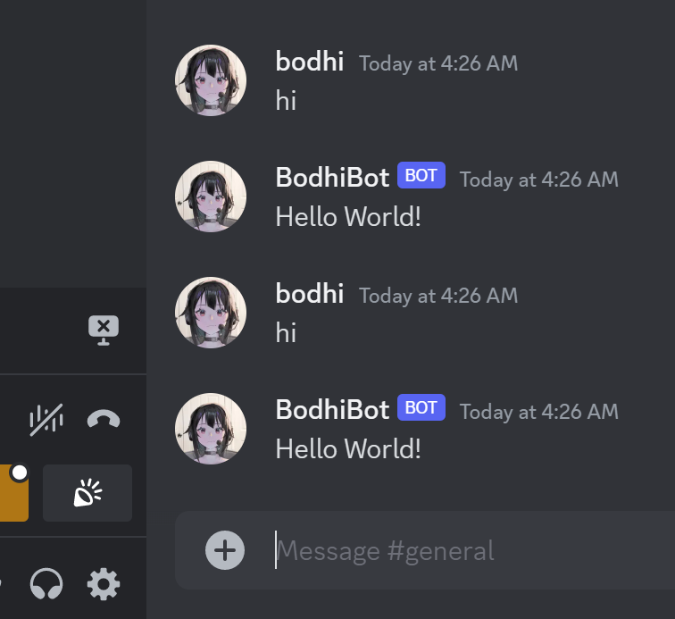
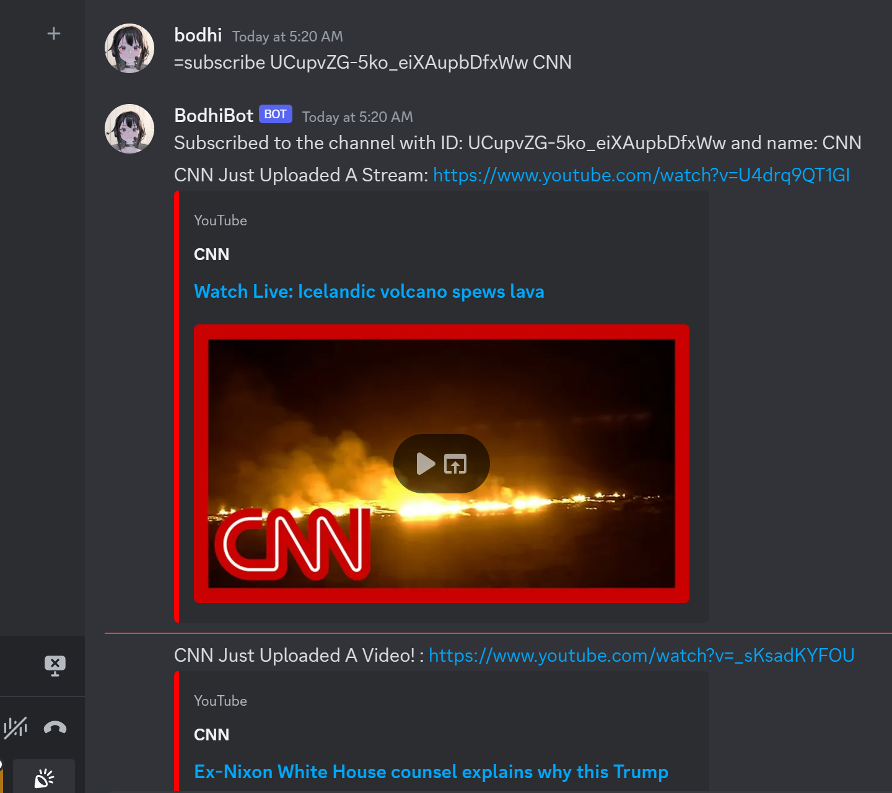

BODHIBOT

Introducing BodhiBot, a Discord Notification Bot developed in Python, with its primary function centered around the automatic notification of users upon new video uploads from designated YouTube channels. Leveraging an adept understanding and application of the YouTube API, the bot facilitates real-time monitoring of both YouTube channels and live-streamers, and provides users with a personalized notification system committed to consistently updating you on your favorite videos.
PreRelease
During the pre-release phase, my journey with BodhiBot unfolded as an enriching learning experience, as I took my first step by grinding multiple tutorials on how to get a bot up and running on Discord. I learned about discord tokens, and how meticulous they can be. I screamed in victory when I saw "Hello World," pop up on my screen, and this would serve as the foundational step in mastering the bot's programming architecture.

